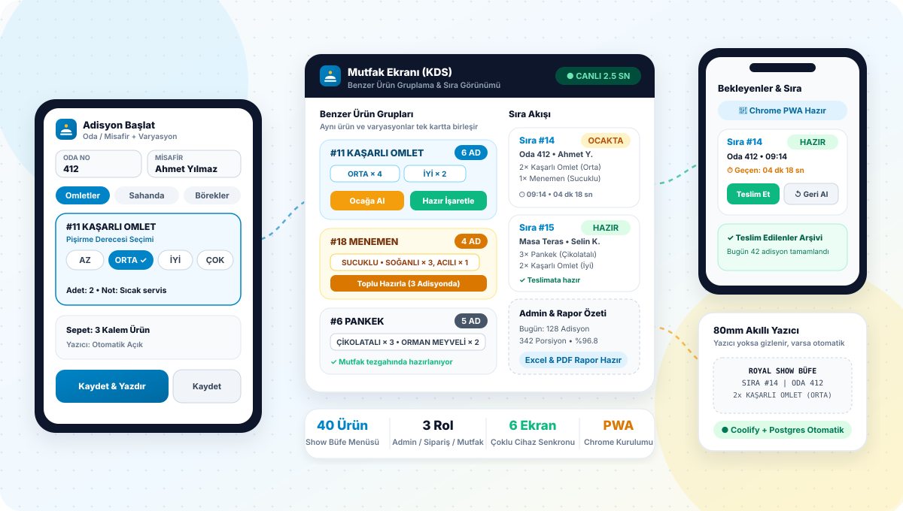
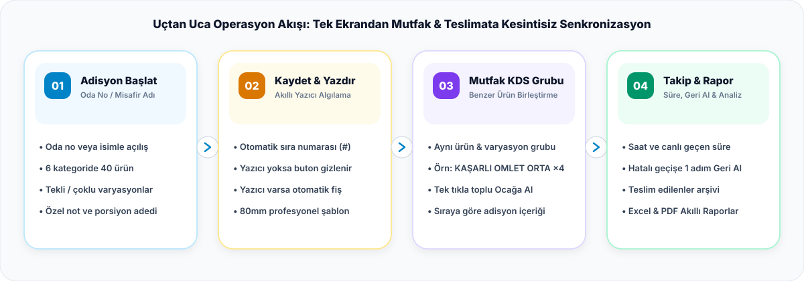
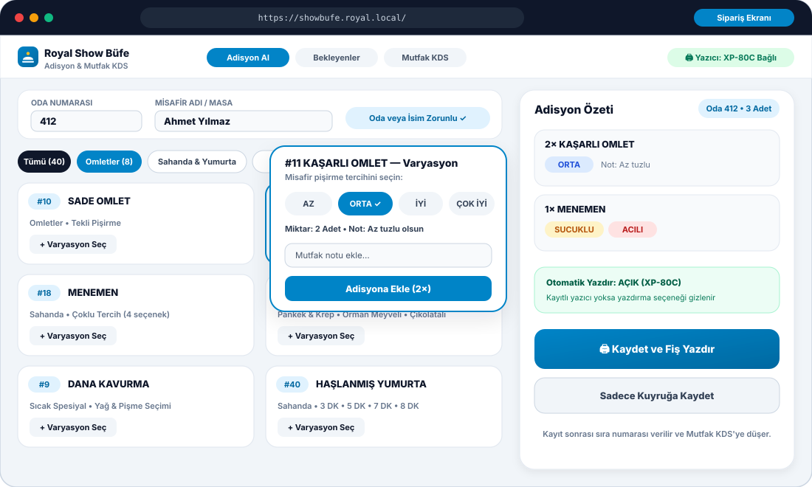
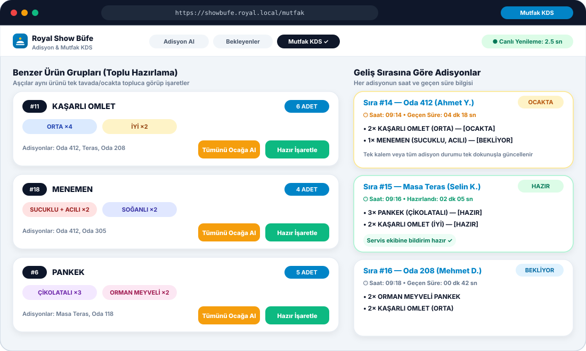
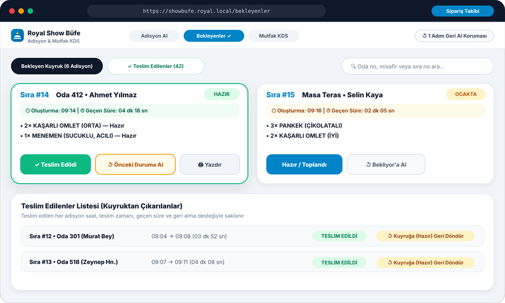
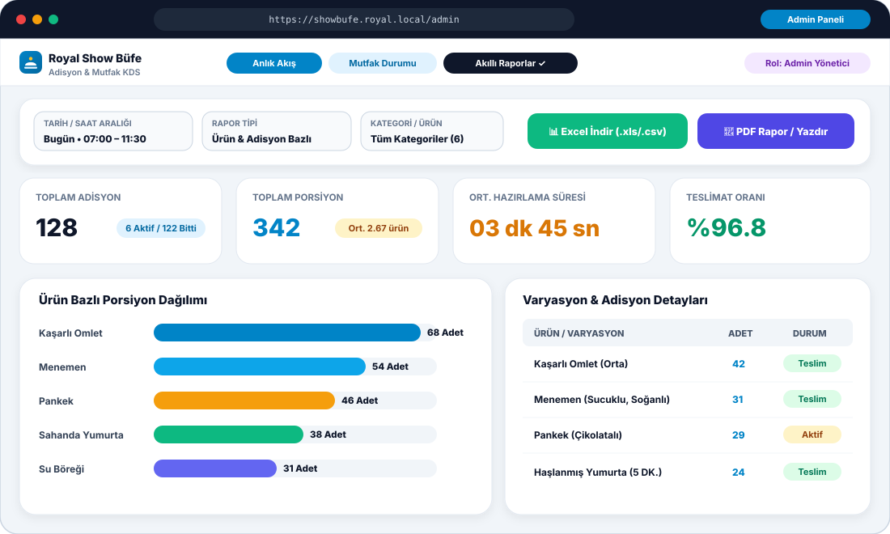
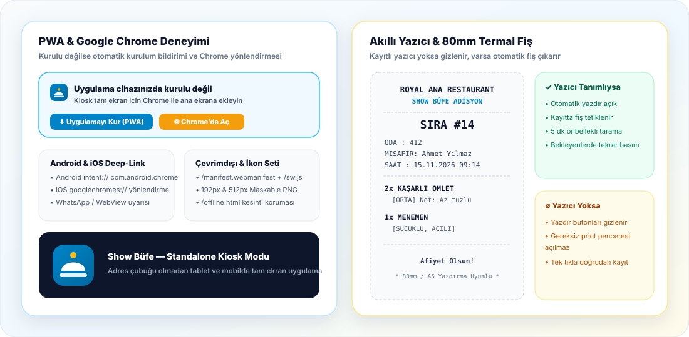
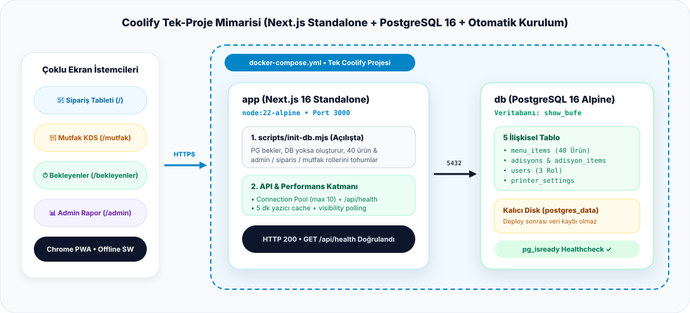

Oda No veya Misafirle Başlat
En az bir kimlik bilgisi (Oda No ya da Misafir Adı) girilir. Her adisyona artan benzersiz sıra numarası (Sıra #1, #2...) atanır.
Misafirden oda numarası veya isimle saniyeler içinde varyasyonlu sipariş alın; 80mm termal fiş basın, mutfakta benzer ürünleri gruplayarak hızla hazırlayın ve Admin panelinden Excel & PDF raporlar üretin.

Şekil 1 — Tek veritabanı üzerinden anlık senkronize çalışan çoklu cihaz Show Büfe ekosistemi
Yoğun kahvaltı ve büfe servislerinde masa/oda karışıklığını ortadan kaldıran, aşçı ve servis personeli arasındaki iletişimi hızlandıran uçtan uca akış.

Şekil 2 — Adisyon oluşturma, akıllı yazdırma, mutfak gruplama ve teslimat adımları
En az bir kimlik bilgisi (Oda No ya da Misafir Adı) girilir. Her adisyona artan benzersiz sıra numarası (Sıra #1, #2...) atanır.
Pişirme derecesi (AZ / ORTA / İYİ / ÇOK İYİ), içerik tercihi (SUCUKLU / SOĞANLI) veya dakika (3-8 DK) diyalog penceresinden seçilir.
Farklı adisyonlardaki aynı ürün ve varyasyonlar birleştirilir; şef aynı tavada kaç adet Kaşarlı Omlet — Orta pişireceğini net görür.
Bekleyen kartlarda oluşum saati ve canlı geçen süre sayacı yer alır. Hatalı işaretlemede tek dokunuşla bir önceki duruma dönülür.
Sekmeler arasında dokunarak veya klavye ok tuşlarıyla geçiş yaparak Adisyon, Mutfak KDS, Bekleyenler ve Admin Raporlama arayüzlerini inceleyebilirsiniz.


KAŞARLI OMLET — ORTA ×4, İYİ ×2)./coklu-ekran tezgah modu ile tablet ve geniş TV ekranlarında tüm özet yan yana izlenir.
09:14) ve saniyelik geçen süre sayacı gösterilir.
Excel menü yapısından aktarılan 40 ürün ilk kurulumda veritabanına otomatik yüklenir. Aşağıdaki filtrelerden tüm ürünleri ve varyasyon tiplerini inceleyebilirsiniz.
İmzalı HMAC-SHA256 çerez oturumu ile her personel yalnızca kendi görev alanındaki ekranlara odaklanır.
İlk kurulumda üç rol varsayılan şifre 123456 ile hazır gelir.
| Kullanıcı Adı | Varsayılan Şifre | Rol & Açılış Ekranı | Yetkili Modüller ve İşlemler |
|---|---|---|---|
admin |
123456 |
Yönetici • /admin |
Tüm ekranlar (/, /bekleyenler, /mutfak, /coklu-ekran, /admin), yazıcı ayarları, Anlık Akış ve Excel/PDF rapor dışa aktarım. |
siparis |
123456 |
Sipariş • / |
Adisyon açma, 40 üründe varyasyon seçme, bekleyen ve teslim edilen adisyonları görme, fiş yazdırma ve hatalı durumu geri alma. |
mutfak |
123456 |
Mutfak KDS • /mutfak |
Benzer ürün gruplama panosu, toplu Ocağa Al / Hazır geçişi, sıraya göre adisyon içeriği, çoklu ekran görünümü ve bekleyen kuyruk takibi. |
Sipariş veya mutfak ekranında yanlışlıkla Ocakta, Hazır ya da Teslim Edildi yapılan kalem ve adisyonlar tek tıkla bir önceki durumuna döndürülür.
Bekleyen her adisyon oluşturma saatini ve mutfakta/kuyrukta geçen dakika-saniye süresini gerçek zamanlı olarak gösterir.
visibilitychange ve çakışan istek kilidi sayesinde arka plan sekmeleri ağı yormaz; API yanıtları milisaniye seviyesinde kalır.
Tablet ve telefonlarda tarayıcı çubukları olmadan uygulama gibi çalışır; yazıcı varlığına göre yazdırma seçeneklerini otomatik yönetir.

Şekil 3 — Uygulama PWA olarak kurulu değilse otomatik gösterilen Chrome kurulum bildirimi ve 80mm fiş çıktısı
standalone modda çalışmayan cihazlarda Uygulamayı Kur (PWA) banner'ı çıkar ve tek tıkla ana ekrana yüklenir.
WhatsApp veya farklı tarayıcılardan açıldığında Android Intent ve iOS googlechromes:// bağlantılarıyla Chrome'da başlatır.
Sistem yazıcıları 5 dakikalık önbellekle taranır. Kayıtlı/ekli yazıcı yoksa yazdır butonları gizlenir; varsa otomatik yazdır seçeneği devreye girer.
public/sw.js statik ikonları ve kabuğu önbelleğe alır; internet anlık kesilirse /offline.html üzerinden bilgilendirme sunar.
Next.js Standalone sunucusu ve PostgreSQL 16 veritabanı tek proje içinde yönetilir. İlk ayağa kalkışta manuel SQL çalıştırmadan tüm tablolar, ürünler ve kullanıcılar hazır olur.

Şekil 4 — Docker Compose tek stack yapısı: app konteyneri açılışta veritabanını otomatik kurar
Coolify panelinde New Resource → Docker Compose seçip https://github.com/Optimus825482/showw.git (main) bağlanır.
docker-compose.yml iç ağda db (postgres:16-alpine) ve kalıcı postgres_data diskiyle birlikte app servisini başlatır.
Konteyner açılışında scripts/init-db.mjs çalışır; veritabanı yoksa oluşturur, db/schema.sql ile 5 tabloyu ve 40 ürünü yükler, 3 rolü tanımlar.
Mobil, tablet ve masaüstü cihazlardan giriş yaparak canlı sipariş, mutfak KDS ve akıllı raporlama deneyimini hemen test edebilirsiniz.